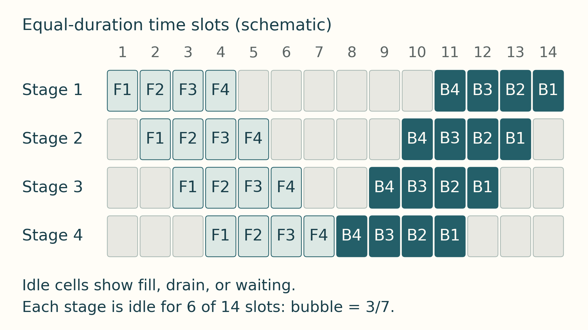

20 Pipeline, expert and combined layouts
The preceding chapter split work inside a layer and across sequence positions. Two other layouts move different objects: a pipeline moves activations between layer stages, while expert parallelism moves selected token representations to expert owners and returns their outputs.
20.1 Pipeline execution
Pipeline parallelism assigns contiguous layer ranges to K stages and moves each micro-batch through them in order.
GPipe is a pipeline-parallel training method that divides a batch into micro-batches so different stages can work at the same time. The fill-and-drain schedule shown here completes their initial forward work through all stages before backward work begins. Their gradients accumulate for one parameter update.
During forward fill, later stages wait for their first input. During forward drain, earlier stages finish their forward work first. Backward work moves in the opposite direction: in the final backward drain, the last forward stage finishes first and the first forward stage finishes last. These idle stage intervals form the pipeline bubble. The figure below shows the occupied and idle intervals.

Reading the pipeline schedule
This schedule is schematic, not a measured timing trace. Pipeline stages appear on the vertical axis and schedule time on the horizontal axis. Labeled blocks show forward and backward work for each micro-batch. Empty regions show fill, drain, or waiting time. Under the balanced-stage assumptions of Equation 20.1, increasing the number of micro-batches reduces the first-order fill/drain fraction. The activation-memory effect is schedule-dependent: with a fixed micro-batch size, additional in-flight work can extend activation lifetimes, while with a fixed global batch, increasing the micro-batch count usually reduces each micro-batch’s size. Check peak memory for the actual schedule and retention policy.
F1 and B1 refer to the forward and backward work for the same micro-batch, and likewise for indices 2 through 4. Throughout this step, the stages use unchanged parameters. B4, B3, B2, and B1 add contributions to the step’s accumulated gradients, normalized for the intended batch loss as described in Section 9.3. They do not trigger four separate parameter updates. After the step’s required backward work and any gradient synchronization finish, each stage’s optimizer updates its parameters once, before the next step’s forward work uses them.1
With M equal-duration micro-batches and balanced stages, following GPipe: Easy Scaling with Micro-Batch Pipeline Parallelism2, the first-order bubble fraction is:
\[ \text{bubble}_{\text{fraction}} = \frac{K - 1}{M + K - 1} \tag{20.1}\]
Here K is the number of pipeline stages and M is the number of micro-batches per global step. This first-order GPipe fill-and-drain model assumes balanced stages, equal micro-batch times, and no additional communication or scheduling delay. Increasing M reduces the relative fill/drain bubble under those assumptions, while more micro-batches may keep additional activation state live.
Example: Pipeline bubble
Inputs: Use K = 4 pipeline stages and M = 8 micro-batches.
Substitution: (4 - 1) / (8 + 4 - 1) = 3 / 11.
Result: The first-order bubble fraction is about 27.3 percent before stage imbalance, communication, or scheduling overhead.
Change to test: With M = 32, the estimate becomes 3 / 35, or about 8.6 percent. The activation-memory change depends on whether the global batch or micro-batch size is held fixed and on the schedule’s retention policy.
Pipeline bubble: Idle stage time caused by pipeline fill, drain, imbalance, or waiting for neighboring stages.
Micro-batch: A smaller slice of the global batch that can be advanced independently through pipeline stages.
Stage balance: Pipeline throughput is limited by the slowest stage, so layer partitioning matters as much as the communication path.
20.2 Expert dispatch and return
A MoE (Mixture of Experts) model contains many expert modules, each a feed-forward submodule, but routes each token to only a selected subset. This sparse expert approach follows GShard: Scaling Giant Models with Conditional Computation and Automatic Sharding3, which shards experts across devices with learned top-2 style routing. Expert parallelism places different experts on different GPUs. The router dispatches token representations to the devices holding the selected experts, and the outputs must be gathered back into the original token order. This often creates all-to-all communication pressure, load-balancing risk, and sensitivity to router skew. The dispatch and combine path described below assumes one all-to-all for dispatch and one for combine. Actual runtimes vary in grouping, overlap, and collective schedule.
- MoE: Mixture of Experts: a sparse model structure with many expert submodules where each token activates only selected experts.
- Expert parallelism: Placement strategy where experts are distributed across GPUs and tokens are routed to the devices that hold their selected experts.
- All-to-all pressure: Each rank may send different token slices to many other ranks and receive different slices back, which can dominate sparse-model performance.
- Communication condition: Sparse expert execution reduces the arithmetic performed per token relative to activating every expert. That reduction yields a speedup only when router imbalance, token dispatch, and communication do not consume the time saved.
One expert-parallel layer follows a concrete state path: the router assigns one or more expert destinations to each token. Each rank packs token representations by destination. An all-to-all dispatch moves those slices to the expert-owning ranks. Local experts compute their outputs. A second all-to-all returns the results. The runtime restores original token order and combines the selected expert outputs using their router weights before the next model operation. Imbalanced destinations can make the busiest expert or rank determine the expert phase’s completion time and delay dependent computation.
Example: Uneven expert dispatch and return
Take two ranks, with expert E0 on rank 0 and E1 on rank 1. Rank 0 owns tokens [a, b], both routed to E1. Rank 1 owns [c, d], with c routed to E0 and d to E1. This top-1 example uses router weight 1 and keeps every token.
Packing by destination gives rank 0 send counts [0, 2] and offsets [0, 0]; rank 1 has counts [1, 1] and offsets [0, 1]. The counts are ordered by destination rank. An offset is the starting index of a destination’s slice in the packed send buffer: rank 0 packs [a, b] and rank 1 packs [c, d]. Rank 0’s zero-count slice for destination 0 starts at index 0, and its two-token slice for destination 1 starts at that same index. After dispatch, rank 0 receives [c] and rank 1 receives [a, b, d], ordered by source rank. Peers must agree on these split sizes before transferring the buffers. An equal-count all-to-all needs padding to agreed slice lengths plus masks for that padding; it cannot directly express the unequal counts above.
Each packed item also carries its source rank and original token position. After expert computation, rank 0 returns c’s result to rank 1. Rank 1 returns a and b to rank 0 and retains d locally. The saved positions restore [a, b] and [c, d] at their owners. With top-k routing, the map also distinguishes each token’s selected experts, and the owner sums their returned outputs with the corresponding router weights.
If each input and output representation has H elements at e bytes each, the three remote token copies a, b and c carry 3 * H * e payload bytes in dispatch and the same again on return. Token d is local; metadata and any padding add overhead. The busiest expert can still set completion time even when network payload is small. Counts, padding, local work and return traffic must therefore be recorded separately.
Expert-parallel all-to-all cost comes from routing token representations, not from the expert MLP arithmetic alone. A rough payload estimate is the number of routed token copies times hidden dimension times bytes per element, split across destination ranks. Top-k routing multiplies token traffic because one token may be sent to more than one expert.
The payload estimate uses these five cost objects:
- Routed tokens: Tokens assigned from each rank to remote expert ranks. Router imbalance creates tail latency when one expert or rank receives too much work.
- Top-k multiplier: The number of experts selected per token. Top-2 routing can roughly double routed activation traffic before outputs are combined.
- Hidden dimension and dtype: The bytes carried by each token representation. FP16 or BF16 activations move twice the raw bytes of 8-bit activations before metadata or padding.
- Topology distance: Whether routed tokens stay inside a node, rack, or cross-node fabric. All-to-all is sensitive to simultaneous peer paths and aggregate fabric behavior.
- Combine path: The return path that restores original token order after expert execution. Dispatch cost is only half the story when the combine collective is also critical.
20.3 Combining and sizing parallelism
Large training runs often combine strategies because each has a different cost. Plain data parallelism replicates model state on every GPU. Tensor parallelism adds per-layer collectives that become more expensive when they cross slower links. Pipeline parallelism introduces fill and drain time. For independent data-, tensor-, and pipeline-parallel axes, GPU count is the product of their degrees, an arrangement often called 3D parallelism.
Label a rank by \((d,p,t)\): \(d\) selects a data replica, \(p\) a pipeline stage, and \(t\) a tensor slice. Holding \(p,t\) fixed and changing \(d\) identifies the ranks that synchronize gradients; holding \(d,p\) fixed and changing \(t\) identifies one tensor group; changing \(p\) passes work between layer stages for one replica and tensor slice.
An independent context-parallel axis adds another factor. In Megatron Bridge, expert parallelism changes expert layers without changing the mapping of other layers. Do not treat every configured parallelism degree as an independent GPU-count factor. Check the runtime’s group definitions.4
The choice of degrees follows the communication frequencies of Section 17.4. In their tested layouts, Narayanan et al. found that tensor parallelism is effective within a multi-GPU server, that pipeline parallelism is needed for larger models across servers, and that poor combinations of the two can cost up to 2 times in throughput even with fast inter-server links. Their composition performed training iterations for a one-trillion-parameter model at 502 petaFLOP/s on 3,072 GPUs, 52 percent of theoretical peak.5 For a system with fast links inside each GPU group and slower links between groups, these findings suggest candidate layouts to compare, not a fixed order that selects the best degrees:
- Feasible groups: Estimate model state, peak activations, temporary buffers, and the rank groups the runtime can form. Reject degrees that fail capacity or group constraints.
- Tensor and pipeline candidates: Try tensor degrees that keep frequent layer exchanges on fast links where possible. Try pipeline degrees that divide the required layers across groups, and include the stage bubble and activation transfers (Section 20.1).
- Data and sharding candidates: For each feasible layout, test how the remaining devices form data replicas and whether ZeRO or FSDP state sharding changes the memory and communication balance.
- Compare completed work: Recompute peak memory, bubble fraction, and synchronization volume, then measure completed step time under the same workload. A layout that fits is a candidate, not yet a performance result.
Example: A 70B model on 64 GPUs
Inputs: Consider training a 70-billion-parameter model with mixed-precision Adam on 8 servers of 8 H100 80 GB GPUs. Its model state is \(16\times70\times10^9=1{,}120\) GB (Section 2.1), far beyond one GPU.
Layout: Tensor degree 8 inside each server, pipeline degree 2 across servers, and data degree 4 (\(8\times2\times4=64\)), with ZeRO-1 sharding of the optimizer state across the 4 replicas. In the \((d,p,t)\) map, \(d=0,1,2,3\), \(p=0,1\), and \(t=0,\ldots,7\) name 64 distinct GPUs. Each eight-rank tensor group stays within one server; the paired pipeline stages and four data replicas cross server boundaries.
Memory per GPU: Assuming evenly sized tensor and pipeline partitions, each GPU holds \(70\times10^9/(8\times2)\approx4.4\) billion parameters. Weights and gradients take \(4\times4.375\times10^9=17.5\) GB, and the sharded optimizer state takes \(12\times4.375\times10^9/4\approx13.1\) GB, 30.6 GB in total. Using 80 GB as the planning capacity leaves about 49 GB before activations, workspaces, communication buffers, allocator overhead, and partition imbalance are counted.
Pipeline bubble: With 16 micro-batches per step, the balanced GPipe fill-and-drain estimate is \((2-1)/(16+2-1)\approx5.9\) percent. Other schedules and unequal stage times change the result.
Gradient synchronization: Each GPU’s tensor/pipeline partition has \(4.375\times10^9\times2=8.75\) GB of gradients. A schedule with one ring gradient all-reduce over the 4 data-parallel replicas per optimizer step sends about \(2\times(3/4)\times8.75\approx13.1\) GB per GPU across servers. That is a gradient-only estimate: a ZeRO-1 schedule using full gradient all-reduce also distributes updated parameter partitions. An optimized schedule can instead reduce gradients to their optimizer owners and gather updated parameters, replacing the full gradient all-reduce. Count the operations the runtime actually uses before estimating total traffic. Overlap with backward can reduce the exposed part (Section 17.2).6
Conclusion: The layout keeps tensor-parallel collectives on NVLink. Cross-server traffic includes data-parallel synchronization and pipeline activations plus their backward gradients for each micro-batch. A fully sharded alternative, tensor degree 8 with FSDP across 8 data-parallel replicas, reduces persistent model state to 17.5 GB per GPU under the same byte accounting, but adds cross-server parameter gathers around wrapped-unit use and temporary full-parameter storage. The profile, not the memory arithmetic alone, decides between them.
The table compares these distributed layouts. Its FSDP rows use PyTorch 2.14 FullyShardedDataParallel outside no_sync; the state windows are explained in Section 18.4.
| Strategy | What is split | Memory effect | Communication pattern | Best fit |
|---|---|---|---|---|
| DDP | Data batch | Replicates parameters, gradients, and optimizer state | Gradient all-reduce | Model fits per GPU |
| FSDP FULL_SHARD | Parameters, gradients, optimizer state | Parameter shards between forward/backward use windows; gradient and optimizer shards | Parameter all-gather before forward and backward; gradient reduce-scatter | Model state exceeds one GPU |
| FSDP SHARD_GRAD_OP | Gradients, optimizer state, and parameters outside computation | Full parameters from pre-forward gather through backward, then resharded; gradient and optimizer state sharded | Pre-forward parameter all-gather and gradient reduce-scatter; no second parameter gather before backward | Full parameter windows fit; retaining them avoids a backward gather |
| Tensor parallelism | Layer tensors | Shards layer parameters; each rank keeps local activations and optimizer state | Frequent layer collectives such as all-reduce and all-gather | Large layers on fast fabric |
| Pipeline parallelism | Layer sequence | Keeps one contiguous parameter stage plus activations for active micro-batches | Forward activation transfers and backward activation-gradient transfers between stages | Deep models across devices |
| Expert parallelism | Experts and token routes | Stores local expert parameters and optimizer state | All-to-all token routing | Mixture-of-Experts models |
A training layout is judged by peak memory and completed step time after its communication, stage imbalance, and temporary buffers are included. Serving uses related partitions but has a different waiting problem: users receive tokens one step at a time, and each active request retains its cache. Distributed serving and KV locality (Section 21.1) applies the layouts to worker groups, request routing, and the cost of moving that state.
References
Huang, Y., Cheng, Y., Bapna, A., Firat, O., Chen, M. X., Chen, D., Lee, H., Ngiam, J., Le, Q. V., Wu, Y., & Chen, Z. (2019). GPipe: Easy Scaling with Micro-Batch Pipeline Parallelism. v5 HTML at GPipe paper (HTML, v5), abstract page at GPipe abstract (DOI), v1 submitted 2018-11-16, v5 revised 2019-07-25. Supports dividing a batch into micro-batches across partitioned layer stages and the first-order bubble overhead of order (K minus 1) divided by (M plus K minus 1) under balanced equal-duration assumptions, with negligible overhead reported when M is at least 4 times K. Limit: estimate omits imbalance, communication, and scheduling delay; more micro-batches can extend activation lifetimes.↩︎
Huang, Y., Cheng, Y., Bapna, A., Firat, O., Chen, M. X., Chen, D., Lee, H., Ngiam, J., Le, Q. V., Wu, Y., & Chen, Z. (2019). GPipe: Easy Scaling with Micro-Batch Pipeline Parallelism. v5 HTML at GPipe paper (HTML, v5), abstract page at GPipe abstract (DOI), v1 submitted 2018-11-16, v5 revised 2019-07-25. Supports dividing a batch into micro-batches across partitioned layer stages and the first-order bubble overhead of order (K minus 1) divided by (M plus K minus 1) under balanced equal-duration assumptions, with negligible overhead reported when M is at least 4 times K. Limit: estimate omits imbalance, communication, and scheduling delay; more micro-batches can extend activation lifetimes.↩︎
Lepikhin, D., et al. (2020). GShard: Scaling Giant Models with Conditional Computation and Automatic Sharding. Preprint at GShard paper (DOI), v1 submitted 2020-06-30. Supports sparsely gated Mixture-of-Experts Transformer layers with top-2 style routing, expert sharding across devices, and sublinear scaling of computation with capacity, demonstrated beyond 600 billion parameters on TPU v3 systems. Limit: dispatch and combine grouping, overlap, and collective schedule vary by runtime; the guide illustration assumes one dispatch and one combine all-to-all.↩︎
NVIDIA. (n.d.). Parallelisms Guide (Megatron Bridge documentation), Data Parallel Size Calculation and Expert Parallelism. Retrieved September 28, 2026, from Megatron Bridge parallelisms guide. The data degree uses world size divided by tensor, pipeline, and context degrees. Expert parallelism applies to expert layers without changing the parallel mapping of other layers. The caution against multiplying every configured degree follows from distinguishing independent axes; this page does not specify expert/data-parallel rank membership.↩︎
Narayanan, D., et al. (2021). Efficient Large-Scale Language Model Training on GPU Clusters Using Megatron-LM. SC21. arXiv:2104.04473. Supports composing tensor, pipeline, and data parallelism. In the paper’s tested layouts, tensor parallelism is effective within a multi-GPU server, pipeline parallelism is needed for larger models, poor combinations cost up to 2x in throughput, and the composition reached 502 petaFLOP/s on 3,072 GPUs (52 percent of peak) for a one-trillion-parameter model. Limit: the candidate-layout search is engineering guidance for the stated topology, not a result proved for every system.↩︎
Rajbhandari, S., Rasley, J., Ruwase, O., & He, Y. (2020). ZeRO: Memory Optimizations Toward Training Trillion Parameter Models. Preprint at ZeRO paper (DOI), v2 submitted 2019-10-07, v3 revised 2020-05-13. Supports staged sharding with Stage 1 for optimizer states, Stage 2 adding gradients, and Stage 3 adding parameters outside materialized use windows. The paper gives per-rank model-state memory of 4 + K/N_d, 2 + 14/N_d, and 16/N_d bytes per parameter with K = 12, the 7.5B-parameter, 64-GPU example of 120, 31.4, 16.6, and 1.9 GB, and a 1.5x communication volume for parameter partitioning. Limit: memory and scaling results depend on model, device count, and implementation policy for gathering and resharding.↩︎